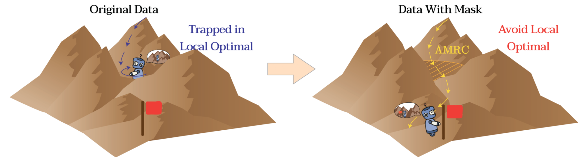
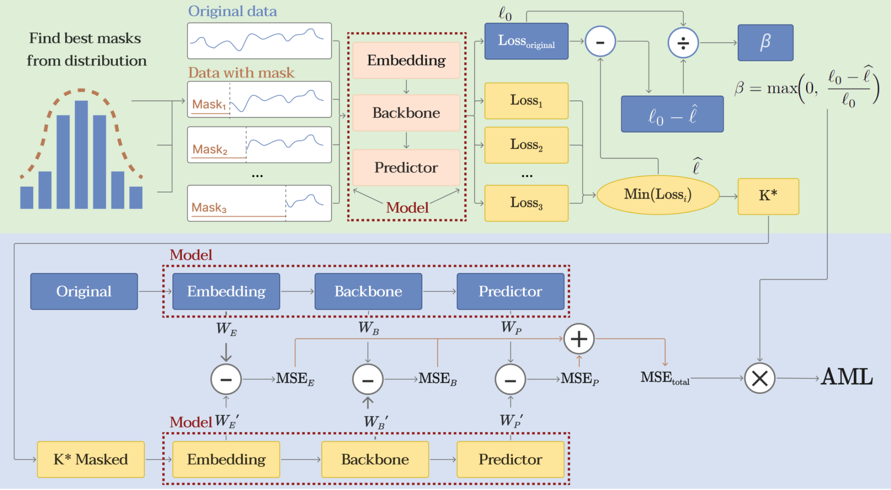
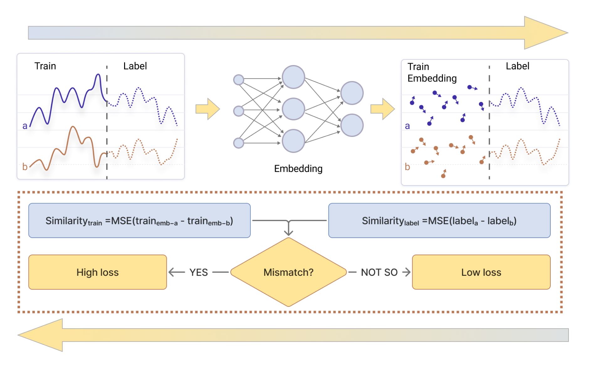

Abstain Mask Retain Core: Time Series Prediction by Adaptive Masking Loss

About the Research
Time series forecasting plays a pivotal role in critical domains such as energy management and financial markets. Although deep learning-based approaches (e.g., MLP, RNN, Transformer) have achieved remarkable progress, the prevailing "long-sequence information gain hypothesis" exhibits inherent limitations. Through systematic experimentation, this study reveals a counterintuitive phenomenon: appropriately truncating historical data can paradoxically enhance prediction accuracy. This indicates that existing models learn substantial redundant features (e.g., noise or irrelevant fluctuations) during training, thereby compromising effective signal extraction.
Building upon information bottleneck theory, we propose an innovative solution termed Adaptive Masking Loss with Representation Consistency (AMRC), which features two core components:
- Dynamic Masking Loss: Adaptively identifies highly discriminative temporal segments to guide gradient descent during model training.
- Representation Consistency Constraint: Stabilizes the mapping relationships among inputs, labels, and predictions.
Experimental results demonstrate that AMRC effectively suppresses redundant feature learning while significantly improving model performance. This work not only challenges conventional assumptions in temporal modeling but also provides novel theoretical insights and methodological breakthroughs for developing efficient and robust forecasting models.
My Contribution
I was primarily responsible for the Scientific Visualization and Empirical Validation of the paper. My role involved:
- Designing an interpretability framework to visualize high-dimensional manifold geometry.
- Illustrating the Stochastic Approximation process to verify the effectiveness of the Embedding Similarity Penalty.
- Conducting rigorous ablation studies across diverse datasets to prove the robustness of the model.
Visual Framework & Results


